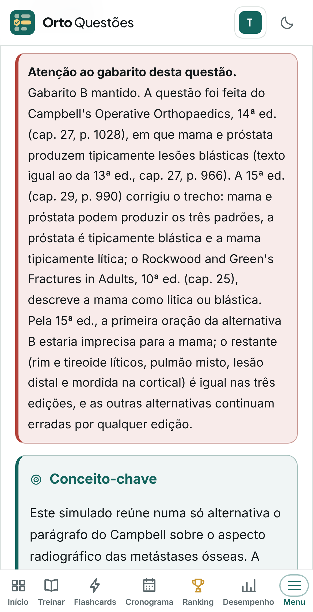
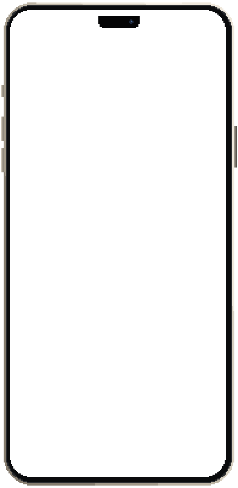

Orto QuestõesComo escrevemos · 1 de 4
Orto QuestõesComo escrevemos · 1 de 4O comentário, como está no site
Quando o livro muda, o comentário avisa.
1
O aviso em vermelho abre o comentário quando uma edição nova do livro muda a resposta.
2
Livro, edição, capítulo e página em cada fato: Campbell 13ª, 14ª e 15ª e o Rockwood.
3
Depois vem o Conceito-chave: a aula, antes de falar das alternativas.


1
2
3
Tela real do site